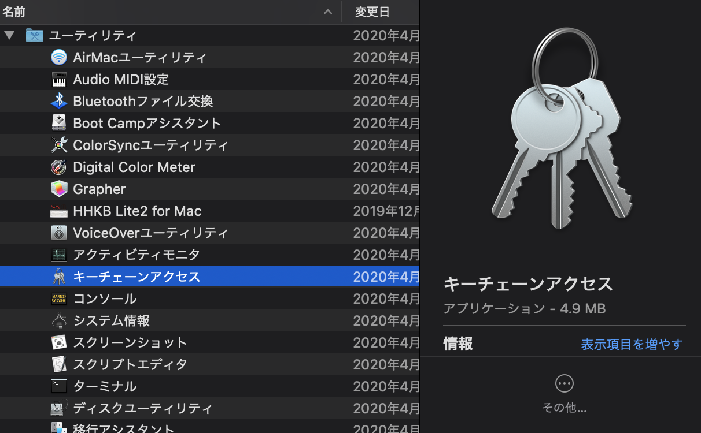
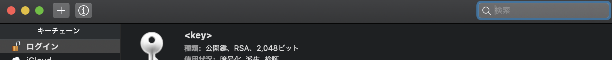

Missing or invalid credentials.
Skip silent fetch commands
remote: Repository not found.ある日、いつもの通りブログをチョロっと書いてGitHubのリポジトリにpushしようとしたら、「Repository not found.」とか言われたわけです。リポジトリがないよ、って言っているわけですね。
ないわけないだろ。
つい最近作ったばっかりだったら「リポジトリ名間違えたかなー」とか思うわけですけど、もう何ヶ月も同じリポジトリ使ってるわけで、稼働実績があるリポジトリなわけです。だから、「リポジトリが見つからないよ」って言われたところで、そんなわけないだろってなるわけです。
エラーのメッセージをよくよく見てみると「リポジトリないよ」って言っている前にMissing or invalid credentials.って言ってるんですよね。認証情報のエラーなんだけど、認証情報を入力できない。
リポジトリを作ってはじめてpullとかする場合、認証画面が表示されたりコンソールなら入力を求められるはずです。それすら表情されない。あれ、これって結構重症？
GitHubに限りませんが、Macの場合認証情報をキーチェーンアクセスというアプリケーションで管理しています。ここに格納されているGitHub用の認証情報がコケてるんじゃね？
というわけでおもむろに確認してみます。

アプリケーションからユーティリティのフォルダを開いて、その中の「キーチェーンアクセス」をクリックします。すると保持している認証情報の一覧が表示されます。

ウィンドウの右上にある検索窓へ「GitHub」と入力します。するとGitHub用の認証情報が表示されるはずです。
表示されたら、そいつは削除します。右クリックメニューから削除を選択します。
きれいサッパリ削除が完了したのを確認したら、キーチェーンアクセスは閉じて構いません。
おもむろにgit pullしてみます。
$ git pull
Username for 'https://github.com':というわけで、認証情報の入力を求められました。再度正しい情報を入力すれば、また普段どおりpullやpushが実行できるようになります。
とくに何か特別な作業をやった記憶はないのですが、たまにこういうことも起こり得るようです。というわけで、なにかのお役に立てば幸いです。